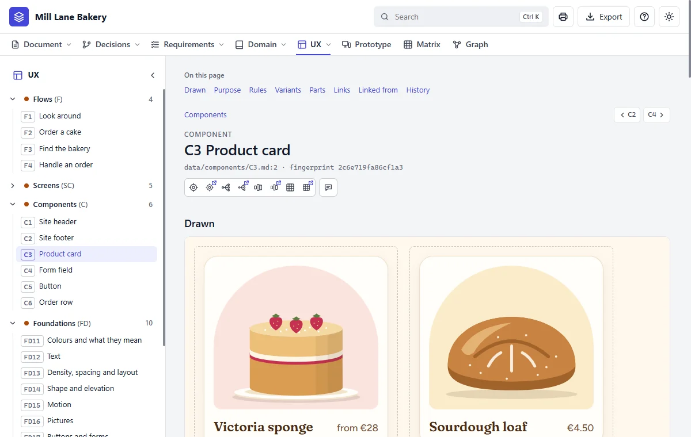

Step 12 of 20 · See what you got
Your components
Do this
Open Components in the tree on the left, then C3 Product card. A component is a part used on more than one screen, built once.

| Component | Used for |
|---|---|
| C1 Site header | The name and the menu |
| C2 Site footer | Hours, address and phone |
| C3 Product card | One thing the bakery bakes |
| C4 Form field | Each box on the order form |
| C5 Button | Every button, in all its states |
| C6 Order row | One order on the staff page |
Each is drawn in its states too: under the pointer, in focus, disabled and showing an error.